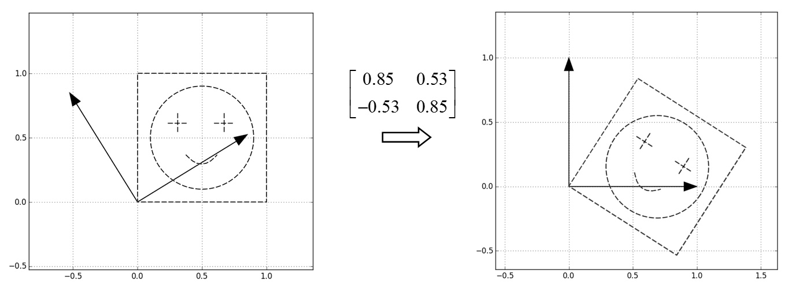
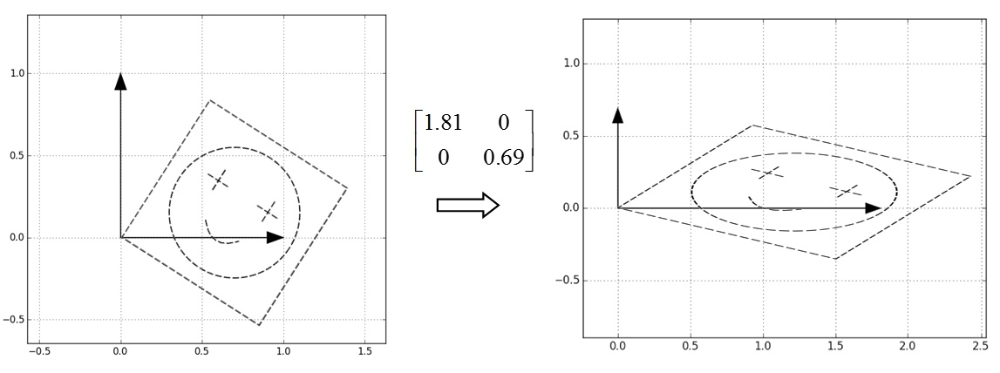
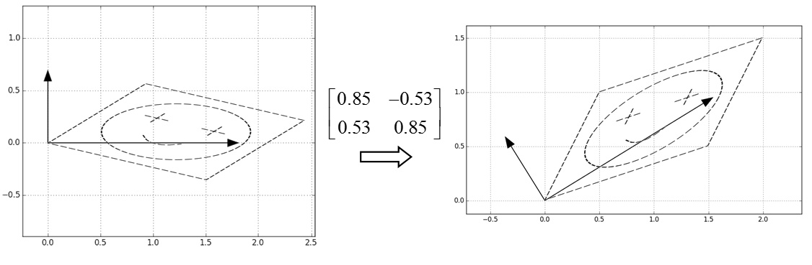
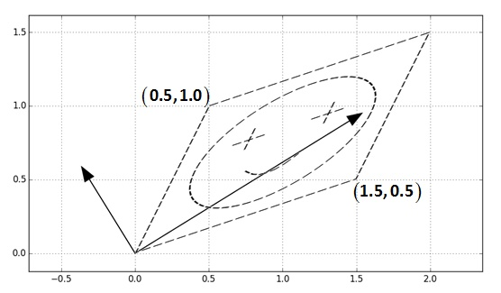

$\boldsymbol{\mathit{A}}\boldsymbol{\mathit{v}}=\lambda \boldsymbol{\mathit{v}}, \boldsymbol{\mathit{A}}=U\Sigma U^\top$
$\boldsymbol{\mathit{A}}\boldsymbol{\mathit{x}}= U\Sigma U^\top \boldsymbol{\mathit{x}}$
$\boldsymbol{\mathit{A}}\boldsymbol{\mathit{x}}= U\Sigma U^\top \boldsymbol{\mathit{x}}$
$U^\top \boldsymbol{\mathit{x}}$
$\Sigma U^\top \boldsymbol{\mathit{x}}$
$U\Sigma U^\top \boldsymbol{\mathit{x}}$
$A\boldsymbol{\mathit{x}}$
